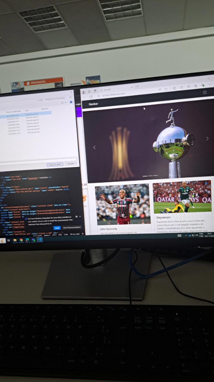
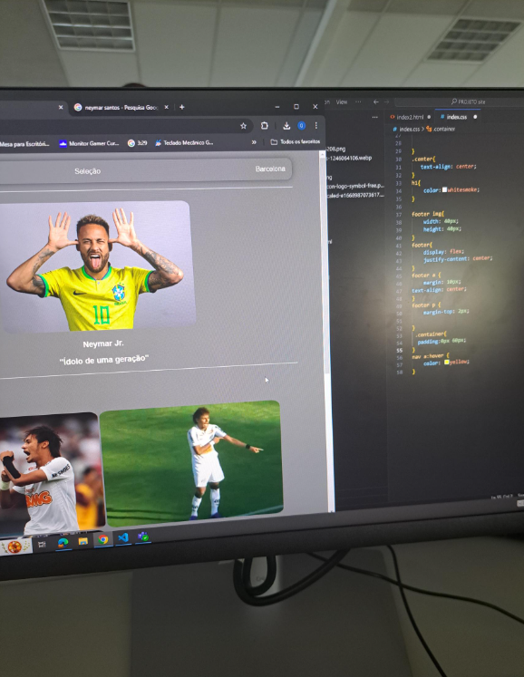

Quem sou eu?
Meu nome é Gustavo, tenho 17 anos e sou estudante de Tecnologia da Informação (TI) no SENAC. Além de me dedicar aos estudos, participo de projetos práticos que simulam demandas reais do mercado, como o projeto de robatico do senac. O que me ajuda a adquirir experiência profissional e a desenvolver habilidades técnicas e comportamentais. Desde cedo, percebi que o caminho para alcançar meus objetivos exige muito mais do que apenas estudar e é preciso estar atento às novas tecnologias, trabalhar em equipe e buscar sempre o aprimoramento pessoal e profissional.
Meus Objetivos
Meu objetivo é construir um futuro próspero, com foco em liberdade, oportunidades e impacto positivo na vida das pessoas ao meu redor. Sei que o sucesso exige esforço, disciplina e visão, e estou comprometido com meu desenvolvimento pessoal e profissional para chegar lá. Escolhi a área de TI como campo de estudo, pois acredito no potencial da tecnologia como ferramenta para criar soluções inovadoras e explorar as oportunidades do mundo digital em constante evolução. Para isso, sigo aprendendo e aproveitando as experiências que contribuem para o meu crescimento. Mesmo jovem, estou focado em estabelecer uma base sólida para meu futuro. Com paciência, perseverança e determinação, estou transformando minhas ambições em realidade, pronto para superar desafios e conquistar novos horizontes.
Alguns Trabalhos
 Contato
Telefone: 11982178428
Email.: gustavosasas@gmail.com